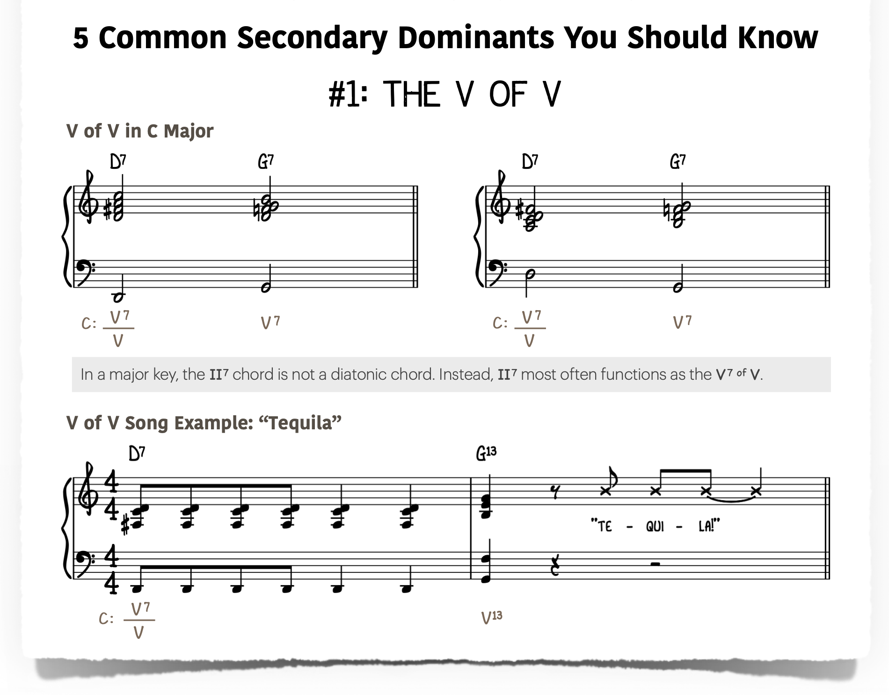
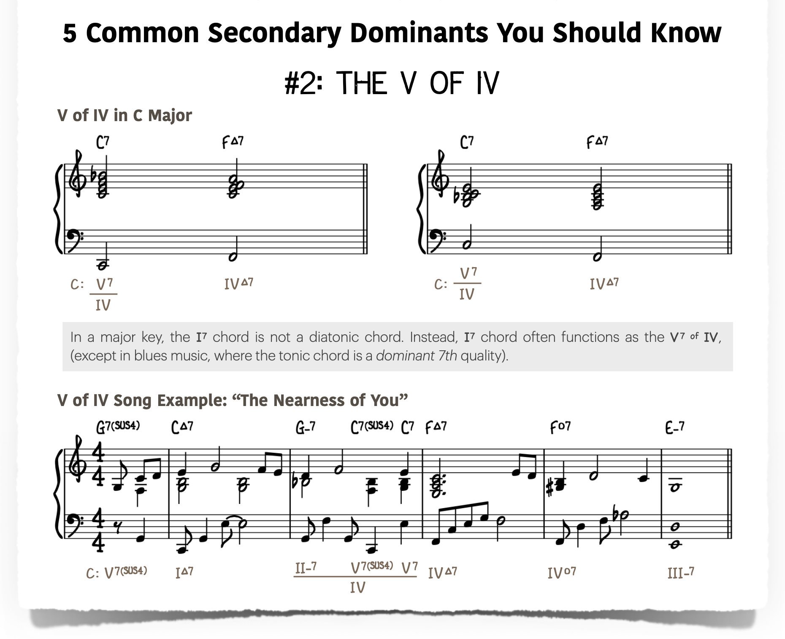
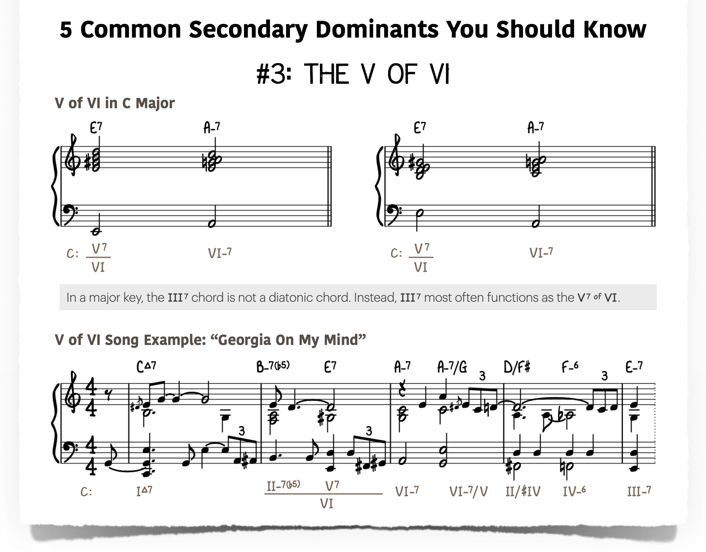
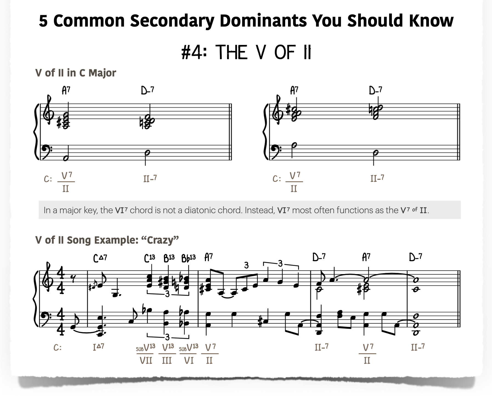
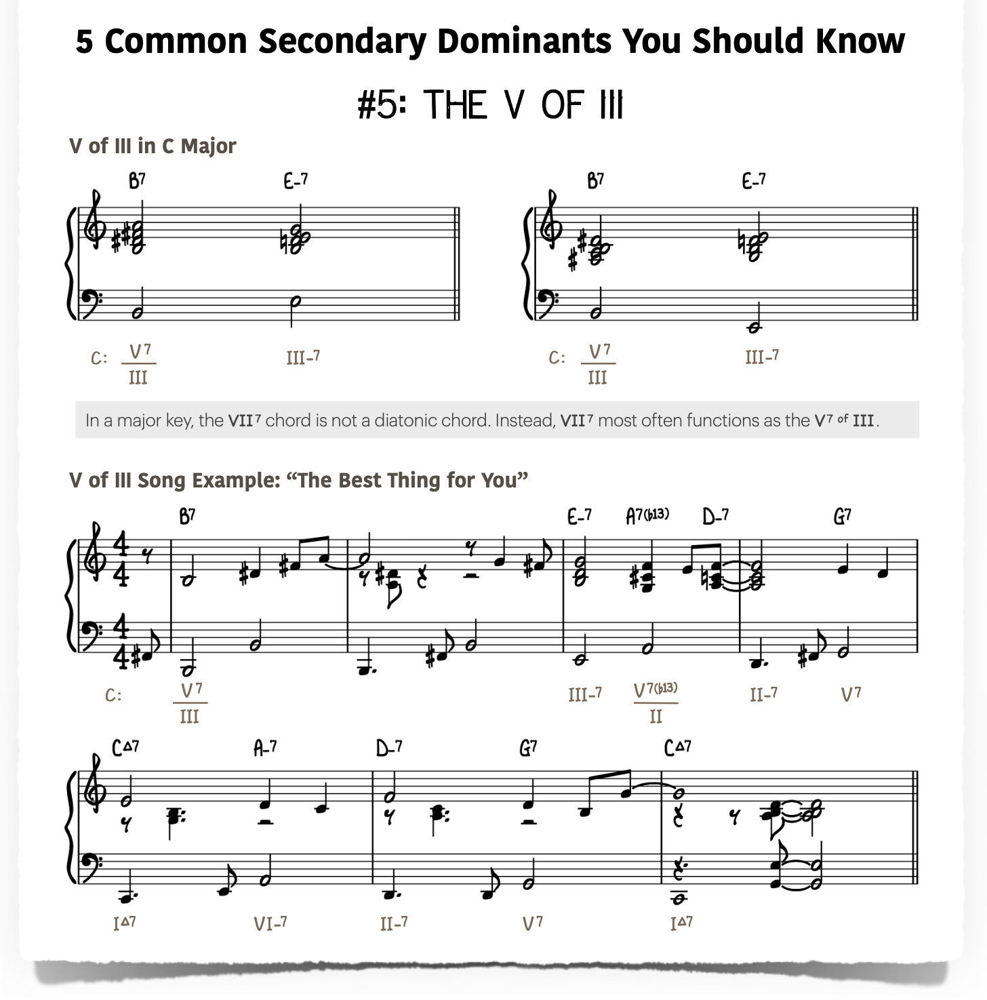
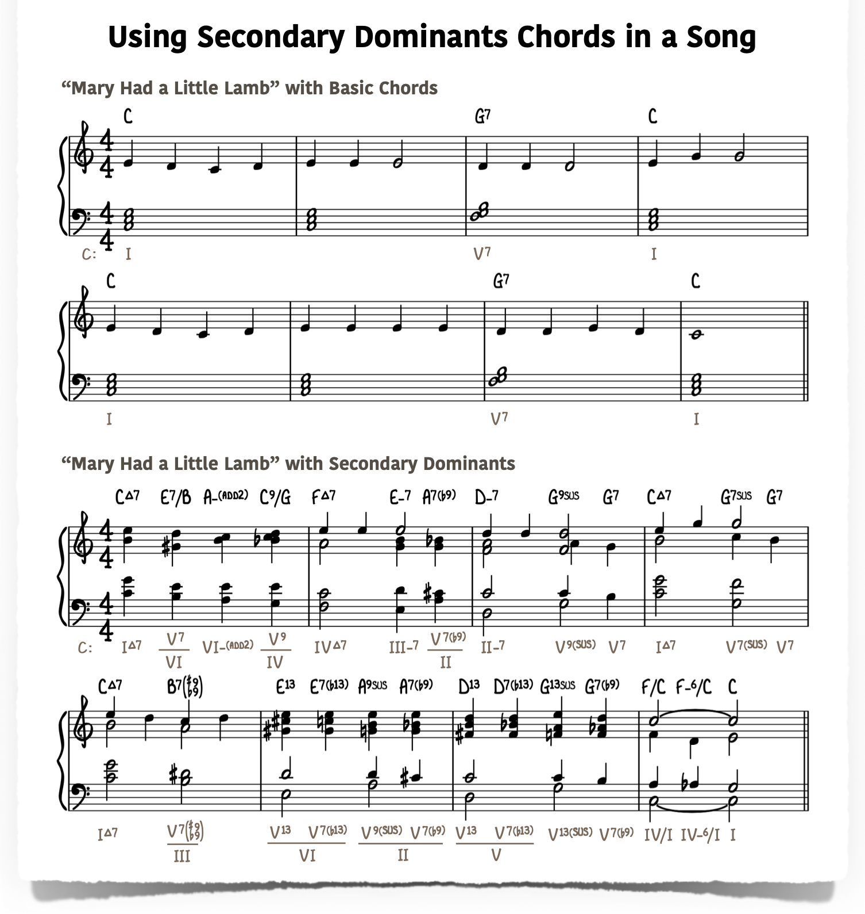

Section 9.1 Secondary Dominants
In any major key, the only dominant 7th chord that occurs naturally is the V7 chord — built on the fifth scale degree. But music would be very limited if that were the only source of harmonic tension. Secondary dominants solve this problem: they are dominant 7th chords borrowed from outside the key that are built to resolve to any diatonic chord, not just the tonic. They add chromatic colour, forward momentum, and a sense of brief harmonic adventure without fully leaving the key.
The concept is often described as tonicisation — temporarily treating a diatonic chord as though it were the home chord (I) of its own mini-key, for just a moment, before continuing in the original key.
Subsection 9.1.1 What Is a Secondary Dominant?
A secondary dominant is the V7 chord of any diatonic chord other than the tonic (I). It is written using the notation \(V/x\text{,}\) read as “five of \(x\)”, where \(x\) is the target chord. Secondary dominants are also known as applied dominant chords — a name that emphasises their function: each is a dominant chord applied to a specific diatonic target. For example:
-
\(V/V\) — the dominant of the dominant chord
-
\(V/ii\) — the dominant of the ii chord
-
\(V/IV\) — the dominant of the IV chord
When a secondary dominant resolves to its target, the listener briefly hears the target chord as a temporary tonic. This moment of tonicisation gives the progression a sense of direction and colour that purely diatonic harmony cannot achieve.
Subsection 9.1.2 How to Construct a Secondary Dominant
The construction rule is simple and applies to any target chord in any key:
-
Identify the root of your target chord.
-
Go up a perfect fifth (or equivalently, down a perfect fourth) from that root.
-
Build a dominant 7th chord on that new root (major triad + minor 7th).
The resulting chord is the secondary dominant of your target. For example, to find \(V7/ii\) in C major:
-
The ii chord is Dm. Its root is D.
-
A perfect fifth above D is A.
-
Build a dominant 7th on A: A–C♯–E–G = A7.
A7 is the \(V7/ii\) in C major. It resolves naturally to Dm.
Subsection 9.1.3 The Secondary Dominants in C Major
The table below lists all of the common secondary dominants available in the key of C major, together with the chromatic note each one introduces.
| Symbol | Chord (C major) | Notes | Resolves to |
|---|---|---|---|
| \(V7/ii\) | A7 | A – C♯ – E – G | Dm (ii) |
| \(V7/iii\) | B7 | B – D♯ – F♯ – A | Em (iii) |
| \(V7/IV\) | C7 | C – E – G – B♭ | F (IV) |
| \(V7/V\) | D7 | D – F♯ – A – C | G (V) |
| \(V7/vi\) | E7 | E – G♯ – B – D | Am (vi) |
Notice that \(V7/IV\) (C7 in C major) is simply the tonic chord with a flatted seventh added. This is sometimes called the “flatted seventh trick”: whenever you want to move toward the IV chord, turn the I chord into a dominant 7th.
The \(V7/vii°\) is not typically used because the diminished seventh chord (vii°) is an unstable chord that does not function convincingly as a tonic target.
Secondary dominants need not be plain dominant 7th chords. Like the primary dominant, they may appear as extended dominants (\(V9\text{,}\) \(V13\)), altered dominants (\(V7\flat9\text{,}\) \(V7\sharp11\)), or suspended dominants (\(V7sus4\)). The richer the voicing, the more colour is added, though the dominant-to-target resolution principle remains unchanged.
Subsection 9.1.4 Recognising Secondary Dominants at a Glance
When reading a chord chart you will often encounter dominant 7th chords that appear to be diatonic but are actually secondary dominants in disguise. The following table maps each apparent Roman numeral in a major key to its usual secondary dominant function.
| Looks like | Actually functions as | Example (C major) | Resolves to |
|---|---|---|---|
| \(II7\) | \(V7/V\) | D7 | G (V) |
| \(I7\) | \(V7/IV\) | C7 | F (IV) |
| \(III7\) | \(V7/vi\) | E7 | Am (vi) |
| \(VI7\) | \(V7/ii\) | A7 | Dm (ii) |
| \(VII7\) | \(V7/iii\) | B7 | Em (iii) |
Exception: in blues, the \(I7\) is the tonic chord itself rather than a secondary dominant. Outside the blues context, a major-key \(I7\) almost invariably functions as \(V7/IV\text{.}\)
Subsection 9.1.5 Why They Work: The Tritone and Voice Leading
The power of any dominant 7th chord — primary or secondary — comes from the tritone it contains. In a dominant 7th chord, the interval between the third and the seventh is a tritone (diminished fifth / augmented fourth), the most harmonically tense interval in tonal music.
This tritone resolves by contrary half-step motion:
-
The major third of the dominant chord (the leading tone of the temporary key) rises by a half step to the root of the target chord.
-
The minor seventh of the dominant chord falls by a half step to the third of the target chord.
For example, in the resolution A7 → Dm:
-
C♯ (third of A7) resolves up to D (root of Dm) — a half step up.
-
G (seventh of A7) resolves down to F (third of Dm) — a half step down.
This smooth chromatic contrary motion is what gives secondary dominants their characteristic sense of inevitability and pull.
Subsection 9.1.6 Common Uses in Progressions
Setting Up the V Chord: \(V7/V\).
The most common secondary dominant is \(V7/V\) — the dominant of the dominant. It adds a chromatic stepping stone before the V chord. In C major, D7 precedes G7, which then resolves to C:
\begin{equation*}
C \rightarrow D7 \rightarrow G7 \rightarrow C
\end{equation*}
The F♯ in D7 creates a chromatic passing tone between the diatonic F and G, giving the progression extra forward drive.
The \(V7/IV\) Flat-Seven Technique.
Turning the I chord into a dominant 7th creates a strong pull toward the IV chord. This is extremely common in blues, gospel, and pop:
\begin{equation*}
C \rightarrow C7 \rightarrow F \rightarrow \ldots
\end{equation*}
The added B♭ in C7 introduces the only chromatic note needed to propel the harmony convincingly to F.
Approaching the ii Chord: \(V7/ii\).
In jazz, the ii–V–I progression is the central building block. A secondary dominant can precede the ii chord to create an extended chain:
\begin{equation*}
A7 \rightarrow Dm7 \rightarrow G7 \rightarrow Cmaj7
\end{equation*}
This is often heard as a “ii–V of ii” followed by ii–V–I.
Secondary Dominant Chains.
Secondary dominants can be chained together, each one resolving to the next, creating a cascade of tension that drives all the way to the tonic. Because each secondary dominant is a fifth above its target, a chain of secondary dominants follows the circle of fifths. In C major, a full chain might be:
\begin{equation*}
E7 \rightarrow A7 \rightarrow D7 \rightarrow G7 \rightarrow C
\end{equation*}
Here, E7 is \(V7/vi\text{,}\) A7 is \(V7/ii\text{,}\) D7 is \(V7/V\text{,}\) and G7 is the primary dominant V7. Each chord resolves down a fifth to the next, creating a powerful momentum toward the final tonic.
Subsection 9.1.7 Secondary Dominants in Familiar Songs
Secondary dominants appear throughout jazz standards, pop, and folk repertoire. The following examples illustrate each of the five secondary dominants as heard in well-known songs. Each chord progression is shown in C major; the secondary dominant chord is highlighted by its Roman numeral analysis below the staff.
Extracts from the songs shown below are from https://pianowithjonny.com/piano-lessons/secondary-dominants-the-complete-guide/#tonal_terminology_in_music_theory
\(V7/V\) — Tequila (The Champs, 1958).
The bridge of Tequila ends on D7, the \(V7/V\) of C major, which propels the music into G7 before the famous instrumental break. The F♯ in D7 is the sole chromatic note: it acts as a leading tone pulling upward to G.

\(V7/IV\) — The Nearness of You (Carmichael / Washington, 1937).
In the second bar of the A section of The Nearness of You, C7 appears as the \(V7/IV\text{,}\) adding a B♭ to the tonic chord and pulling the harmony convincingly toward F.

\(V7/vi\) — Georgia on My Mind (Hoagy Carmichael, 1930).
In bar two of Georgia on My Mind, E7 arrives as the \(V7/vi\text{,}\) temporarily tonicising A minor. The G♯ in E7 is the chromatic intruder that signals the brief tonicisation before the phrase continues in C major.

\(V7/ii\) — Crazy (Willie Nelson / Patsy Cline, 1961).
Crazy opens with A7 functioning as \(V7/ii\text{,}\) resolving to Dm7 and leading directly into a ii–V–I cadence. The C♯ in A7 is the chromatic note that drives the ear toward D minor.

\(V7/iii\) — The Best Thing for You (Irving Berlin, 1950).
Irving Berlin’s The Best Thing for You showcases the less common \(V7/iii\text{:}\) B7 resolves to E minor. The D♯ in B7 acts as a leading tone to E, giving the resolution a distinctly chromatic colour.


Subsection 9.1.8 Extended ii–V–I Substitutions in Jazz
In jazz harmony, secondary dominants are often preceded by their own ii chord, creating a series of overlapping ii–V–I patterns. This technique extends and colours longer progressions. For example, to approach G7 (the V of C), a jazz player might insert Am7–D7 (the ii–V of G) before the G7 itself:
\begin{equation*}
Cmaj7 \rightarrow Am7 \rightarrow D7 \rightarrow Dm7 \rightarrow G7 \rightarrow Cmaj7
\end{equation*}
This is the same principle that underlies the cycle of dominants used throughout bebop and modern jazz. Mastering secondary dominants is, in effect, mastering the language of harmonic motion that drives all jazz improvisation.
Subsection 9.1.9 Practical Tips
-
Start with \(V7/V\text{.}\) It is the most natural and musical secondary dominant. Insert a D7 before G in any C major progression and listen to the difference.
-
Use the flat-seven trick freely. Adding a minor 7th to the I chord (making it I7) is one of the quickest ways to add colour and propel toward the IV chord, especially in blues and gospel styles.
-
Listen for the chromatic note. Each secondary dominant introduces exactly one note not in the home key. That chromatic note is what your ear latches on to — learn to hear it and then resolve it.
-
Practise the chain. Work through the full secondary dominant chain (\(E7 \rightarrow A7 \rightarrow D7 \rightarrow G7 \rightarrow C\)) slowly, listening to how each dominant resolves smoothly into the next by a descending fifth. Transpose this chain to all twelve keys.
-
Pair each secondary dominant with its ii chord. Once you are comfortable with secondary dominants alone, add their related ii chord before each one to build extended jazz progressions.